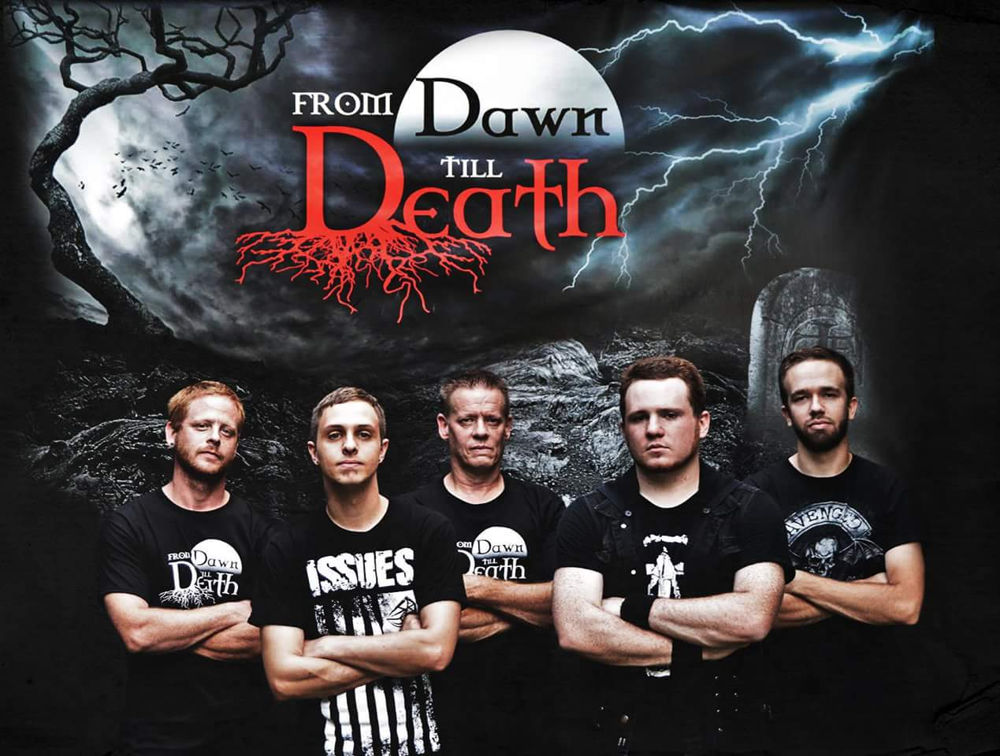

Meet the Band

Name: Shaun L Weigle
Role: Bass Guitar
From: York Springs, PA
Favorite Bands: Kix, Rush, Yes, Scorpions, GnR, Ax7, more.
Influences: Mark Schenker, Geddy Lee, Chris Squire.
Name: Kevin Kroushour
Role: Guitar/ Backup Vocals
From: East Berlin, PA
Favorite Bands: Bullet For My Valentine, Trivium, Issues, Breaking Benjamin, A Day To Remember,
Story of the Year, just to name a few.
Influences: Mark Tremonti, Adam Dutkiewicz, Kevin Skaff, Corey Beaulieu, Dan Jacobs
Name: Ron Weigle
Role: Guitar/ Backup Vocals
From: York Springs, PA
Favorite Bands: Ozzy, Priest, Scorpions, GnR, Ax7, many more.
Influences: Slash, Satriani, Synyster Gates
Name: Louis Allison
Role: Lead Vocals
From: York, PA
Favorite Bands:
Influences:
Name: Justin Weigle
Role: Drums/ Backup Vocals
From: York Springs, PA
Favorite Bands: A7x, Issues, SystemOAD, Blink-182, State Champs, With Confidence, etc
Influences: Jimmy "The Rev" Sullivan, Travis Barker, Evan Ambrosio